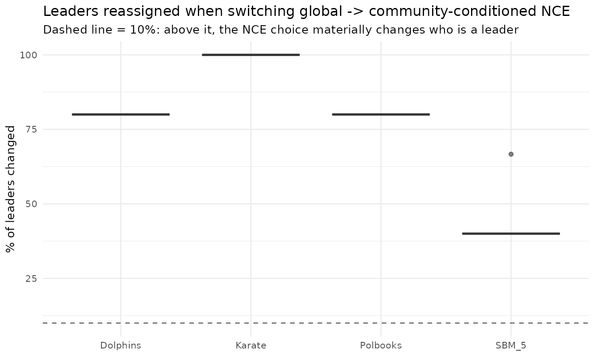

The leader score: global vs community-conditioned NCE (Box)
Source:vignettes/nce-leader-score.Rmd
nce-leader-score.RmdIs the NCE measuring the right thing?
The paper’s Node-Connection Entropy uses the global connection probability . But a hub whose degree is spread across all communities can maximise this score while being a poor community leader. The Box lens — a model is a simplification, so check what it actually does — motivates a community-conditioned alternative:
exposed in the package as nce_local_score(). We measure
how often the designated leader changes when re-picked
under the local score.
d$results |>
dplyr::group_by(graph) |>
dplyr::summarise(
communities = round(mean(n_communities), 1),
H_global = round(mean(H_paper_global), 3),
H_local = round(mean(H_paper_local), 3),
pct_leaders_changed = round(mean(pct_leaders_changed), 1),
.groups = "drop") |>
knitr::kable(caption = "Mean leader-score values and the fraction of leaders that change identity under the local NCE.")| graph | communities | H_global | H_local | pct_leaders_changed |
|---|---|---|---|---|
| Dolphins | 5.0 | 0.581 | 0.741 | 80.0 |
| Karate | 3.0 | 0.840 | 0.598 | 100.0 |
| Polbooks | 5.0 | 0.535 | 0.736 | 80.0 |
| SBM_5 | 5.1 | 0.316 | 0.755 | 42.7 |
library(ggplot2)
ggplot(d$results, aes(graph, pct_leaders_changed, fill = graph)) +
geom_boxplot(alpha = 0.6, show.legend = FALSE) +
geom_hline(yintercept = 10, linetype = 2, colour = "grey40") +
labs(title = "Leaders reassigned when switching global -> community-conditioned NCE",
subtitle = "Dashed line = 10%: above it, the NCE choice materially changes who is a leader",
x = NULL, y = "% of leaders changed") +
theme_minimal(base_size = 10)
Reading. If the change fraction is non-trivial
(above ~10%), the choice of NCE definition is not an
interpretive detail — it materially decides who is crowned the leader.
Both scores are exported (nce_score() and
nce_local_score()) precisely so this comparison is part of
the contribution rather than buried.
References
- Ospina, R., Silva, G., Matos Junior, F. J., Leite, A., & Ochi, L. S. (2026). A GRASP Framework for Community and Leader Detection in Complex Networks. Preprint.
- Akachar, E., Bougteb, Y., Ouhbi, B., & Frikh, B. (2025). LeaDCD: Leadership concept-based method for community detection. Information Sciences, 686, 121341. doi:10.1016/j.ins.2024.121341